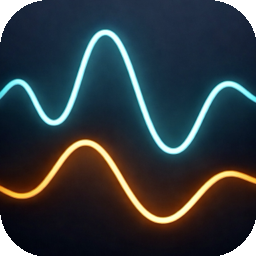

readOutReal-time
measurement
dashboard
Multimeters · USB-C power meters
readOut
SCPI + USB-COPEN SOURCE · RUST
readOut
Live measurement without the noise.
readOut
Two signals.
One clear view.
For SCPI multimeters and USB-C power meters.
readOut
Real-time measurement dashboard
readOut
Measure.
Control.
Log.
macOS · Rust · MIT